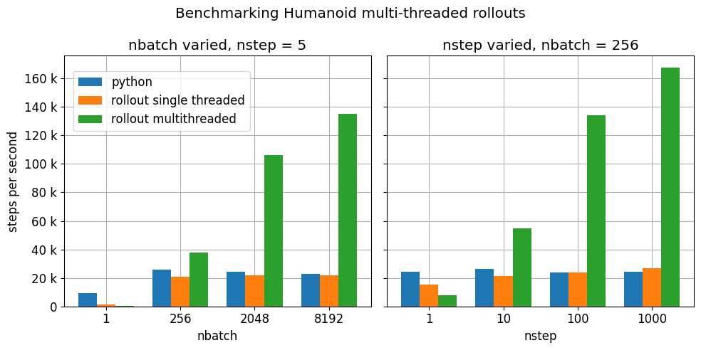

Python#
备注
本页由 AI（Claude Sonnet）根据 MuJoCo 官方英文文档（2026-11-16 版）翻译，仅供学习参考；如有出入，以英文原版为准。术语对照见资料包中的 术语表.md 。
MuJoCo 自带原生 Python 绑定，使用 pybind11 以 C++ 开发。Python API 与底层 C API 保持一致。这会带来一些不够 Pythonic 的代码结构（例如函数参数的顺序），但好处是 API 文档 对两种语言都适用。
Python 绑定以 mujoco 包的形式发布在 PyPI 上。这些是底层绑定，目标是尽可能直接地访问
MuJoCo 库。不过，为了提供典型 Python 库中开发者所期望的 API 和语义，这些绑定在若干地方有意与原始的 MuJoCo API 有所不同，本页各处都对这些差异做了说明。
mujoco package on PyPI. These are
low-level bindings that are meant to give as close to a direct access to the MuJoCo library as possible. However, in
order to provide an API and semantics that developers would expect in a typical Python library, the bindings
deliberately diverge from the raw MuJoCo API in a number of places, which are documented throughout this page.Google DeepMind 的 dm_control 强化学习库依赖于 mujoco 包，并将继续由 Google DeepMind 提供支持。对于依赖 1.0.0 之前版本 dm_control 的代码，请参阅
迁移指南。
mujoco package and continues to be supported by Google DeepMind. For code that depends on dm_control versions
prior to 1.0.0, consult the
migration guide.对于 mujoco-py 用户，我们在下方提供了 迁移说明。
教程笔记本#
使用 Python 绑定的 MuJoCo 教程见此处：
安装#
推荐通过 PyPI 安装此包：
pip install mujoco
软件包中已附带一份 MuJoCo 库，无需 单独下载或安装。
从 MuJoCo 4.0.0 开始，顶层的 mujoco 发行包是一个元包（metapackage），它会安装核心绑定（ mujoco-core ）、MuJoCo Studio 与 Filament
渲染（ mujoco-studio ），以及经典 OpenGL 渲染所需的依赖（ glfw 和 pyopengl ）。根据你的环境，也可以单独安装各个子包：
mujoco distribution is a metapackage that installs the core bindings
(mujoco-core), MuJoCo Studio and Filament rendering (mujoco-studio), and the classic OpenGL rendering
dependencies (glfw and pyopengl). Depending on your environment, you can also install individual sub-packages:pip install mujoco-core：仅依赖numpy的最小化核心仿真绑定（适合无显示器的服务器和强化学习训练）。安装mujoco-core[rendering]可附带glfw和pyopengl，用于经典 OpenGL 渲染以及不含 MuJoCo Studio 的mujoco.viewer。pip install mujoco-core: Minimal core simulation bindings depending only onnumpy(ideal for headless servers and RL training). Installmujoco-core[rendering]to includeglfwandpyopenglfor classic OpenGL rendering andmujoco.viewerwithout MuJoCo Studio.pip install mujoco-studio：MuJoCo Studio 交互式查看器与 Filament 渲染器绑定（会自动安装mujoco-core和mujoco-studio-wasm）。pip install mujoco-studio: MuJoCo Studio interactive viewer and Filament renderer bindings (automatically installsmujoco-coreandmujoco-studio-wasm).pip install mujoco[usd]或pip install mujoco-usd：OpenUSD 导入器、导出器和物理模式（physics schemas）；参见 USD 导出器 和 OpenUSD。pip install mujoco[usd]orpip install mujoco-usd: OpenUSD importer, exporter, and physics schemas; see USD exporter and OpenUSD.
交互式查看器#
Python 包的 mujoco.viewer 模块提供了一个交互式 GUI 查看器。它与 MuJoCo 二进制发行版附带的 simulate
应用基于同一套代码。它支持三种不同的使用场景：托管式查看器、独立应用 和
被动式查看器。
mujoco.viewer module. It is based on the
same codebase as the simulate application that ships with the MuJoCo binary releases. Three distinct
use cases are supported: managed viewer, standalone app, and passive
viewer.托管式查看器#
viewer.launch 函数会启动交互式查看器并*阻塞用户代码*，这有助于精确控制物理循环的时序。如果用户代码以
引擎插件 或 物理回调 的形式实现，并由 MuJoCo 在 mj_step 期间调用，则应使用此模式。
viewer.launch function launches the interactive viewer and blocks user code which is useful to support precise
timing of the physics loop. This mode should be used if user code is implemented as engine
plugins or physics callbacks, and is called by MuJoCo during mj_step.viewer.launch()启动一个空的可视化会话，可以通过拖放加载模型。viewer.launch()launches an empty visualization session, where a model can be loaded by drag-and-drop.viewer.launch(model)为给定的mjModel启动可视化会话，可视化器在内部创建自己的mjData实例。viewer.launch(model)launches a visualization session for the givenmjModelwhere the visualizer internally creates its own instance ofmjDataviewer.launch(model, data)与上一种方式相同，区别在于可视化器直接操作给定的mjData实例——退出时data对象将已被修改。viewer.launch(model, data)is the same as above, except that the visualizer operates directly on the givenmjDatainstance – upon exit thedataobject will have been modified.
独立应用#
mujoco.viewer Python 包使用 if __name__ == '__main__' 机制，使 托管式查看器
可以作为独立应用直接从命令行调用：
mujoco.viewer Python package uses the if __name__ == '__main__' mechanism to allow the managed
viewer to be called directly from the command line as a standalone app:python -m mujoco.viewer启动一个空的可视化会话，可以通过拖放加载模型。python -m mujoco.viewerlaunches an empty visualization session, where a model can be loaded by drag-and-drop.python -m mujoco.viewer --mjcf=/path/to/some/mjcf.xml为指定的模型文件启动可视化会话。python -m mujoco.viewer --mjcf=/path/to/some/mjcf.xmllaunches a visualization session for the specified model file.
被动式查看器#
viewer.launch_passive 函数以*非阻塞*的方式启动交互式查看器，允许用户代码继续执行。在此模式下，由用户脚本负责控制时序并推进物理状态，并且除非用户显式同步传入的事件，否则鼠标拖拽扰动不会生效。
viewer.launch_passive function launches the interactive viewer in a way which does not block, allowing user
code to continue execution. In this mode, the user’s script is responsible for timing and advancing the physics state,
and mouse-drag perturbations will not work unless the user explicitly synchronizes incoming events.警告
在 MacOS 上， launch_passive 要求通过专门的 mjpython 启动器来执行用户脚本，这是为了绕过平台的一项限制：该限制要求主线程必须是负责渲染的线程。 mjpython 命令随 mujoco 包一同安装，可以直接替代常用的 python 命令，并支持同样的一组命令行标志和参数。例如，可以通过 mjpython my_script.py 执行脚本，通过 mjpython -m IPython 启动 IPython 终端。
launch_passive requires that the user script is executed via a special mjpython launcher, this is
needed to circumvent a platform limitation which requires the main thread to be one that does the rendering. The
mjpython command is installed as part of the mujoco package, and can be used as a drop-in replacement for the
usual python command and supports an identical set of command line flags and arguments. For example, a script can
be executed via mjpython my_script.py, and an IPython shell can be launched via mjpython -m IPython.launch_passive 函数返回一个句柄，可用于与查看器交互。它具有以下属性：
launch_passive function returns a handle which can be used to interact with the viewer. It has the following
attributes:cam、opt和pert属性：分别对应 mjvCamera、mjvOption 和 mjvPerturb 结构体。cam,opt, andpertproperties: correspond to mjvCamera, mjvOption, and mjvPerturb structs, respectively.lock()：以上下文管理器的形式提供查看器的互斥锁。由于查看器在自己的线程中运行，用户代码在修改任何物理或可视化状态之前，必须确保已持有查看器锁。这些状态包括传给launch_passive的mjModel和mjData实例，以及查看器句柄的cam、opt和pert属性。lock(): provides a mutex lock for the viewer as a context manager. Since the viewer operates its own thread, user code must ensure that it is holding the viewer lock before modifying any physics or visualization state. These include themjModelandmjDatainstance passed tolaunch_passive, and also thecam,opt, andpertproperties of the viewer handle.sync(state_only=False)：在用户的mjModel、mjData与 GUI 之间同步。为了让用户脚本无需持有查看器锁就能对mjModel和mjData做任意修改，被动式查看器不会在sync调用之外访问或修改这些结构体。如果state_only参数为True，则不会同步全部内容，而只同步与 mjSTATE_INTEGRATION 对应的mjData字段，随后调用 mj_forward。后一种选项要快得多，但不会像默认情况那样捕获任意修改。通过 GUI 所做的更改在两种情况下都会被捕获，但例如通过代码修改mjModel.geom_rgba时，在state_only=False时会被捕获，在state_only=True时则不会。sync(state_only=False): synchronizes between the user’smjModel,mjDataand the GUI. In order to allow user scripts to make arbitrary modifications tomjModelandmjDatawithout needing to hold the viewer lock, the passive viewer does not access or modify these structs outside ofsynccalls. If thestate_onlyargument isTrue, instead of syncing everything, only themjDatafields corresponding to mjSTATE_INTEGRATION are synced, followed by a call to mj_forward. The latter option is much faster, but would not pick up arbitrary changes as in the default case. Changes made via the GUI are picked up in either case but changing e.g.,mjModel.geom_rgbavia code will be picked up whenstate_only=Falsebut not whenstate_only=True.用户脚本必须调用
sync，查看器才能反映物理状态的变化。sync函数还会把用户在 GUI 中的输入传回mjOption（位于mjModel内）和mjData，包括启用/禁用标志、控制输入和鼠标扰动。User scripts must callsyncin order for the viewer to reflect physics state changes. Thesyncfunction also transfers user inputs from the GUI back intomjOption(insidemjModel) andmjData, including enable/disable flags, control inputs, and mouse perturbations.update_hfield(hfieldid)：更新指定hfieldid处的高度场数据，供后续渲染使用。update_hfield(hfieldid): updates the height field data at the specifiedhfieldidfor subsequent renderings.update_mesh(meshid)：更新指定meshid处的网格数据，供后续渲染使用。update_mesh(meshid): updates the mesh data at the specifiedmeshidfor subsequent renderings.update_texture(texid)：更新指定texid处的纹理数据，供后续渲染使用。update_texture(texid): updates the texture data at the specifiedtexidfor subsequent renderings.close()：以编程方式关闭查看器窗口。该方法无需加锁即可安全调用。close(): programmatically closes the viewer window. This method can be safely called without locking.is_running()：如果查看器窗口正在运行则返回True，已关闭则返回False。该方法无需加锁即可安全调用。is_running(): returnsTrueif the viewer window is running andFalseif it is closed. This method can be safely called without locking.user_scn：一个 mjvScene 对象，允许用户修改渲染标志，并向渲染场景中添加自定义的可视化 geom。它与查看器内部用于渲染最终场景的mjvScene相互独立，完全由用户控制。用户脚本可以调用例如 mjv_initGeom 或 mjv_connector 向user_scn添加可视化 geom，在下一次调用sync()时，查看器会把这些 geom 纳入后续渲染的图像。类似地，用户脚本可以修改user_scn.flags，这些修改会在下一次调用sync()时生效。sync()调用还会把通过 GUI 对渲染标志所做的更改复制回user_scn，以保持一致。例如：user_scn: an mjvScene object that allows users to add change rendering flags and add custom visualization geoms to the rendered scene. This is separate from themjvScenethat the viewer uses internally to render the final scene, and is entirely under the user’s control. User scripts can call e.g. mjv_initGeom or mjv_connector to add visualization geoms touser_scn, and upon the next call tosync(), the viewer will incorporate these geoms to future rendered images. Similarly, user scripts can make changes touser_scn.flagswhich would be picked up at the next call tosync(). Thesync()call also copies changes to rendering flags made via the GUI back intouser_scnto preserve consistency. For example:with mujoco.viewer.launch_passive(m, d, key_callback=key_callback) as viewer: # Enable wireframe rendering of the entire scene. viewer.user_scn.flags[mujoco.mjtRndFlag.mjRND_WIREFRAME] = 1 viewer.sync() while viewer.is_running(): ... # Step the physics. mujoco.mj_step(m, d) # Add a 3x3x3 grid of variously colored spheres to the middle of the scene. viewer.user_scn.ngeom = 0 i = 0 for x, y, z in itertools.product(*((range(-1, 2),) * 3)): mujoco.mjv_initGeom( viewer.user_scn.geoms[i], type=mujoco.mjtGeom.mjGEOM_SPHERE, size=[0.02, 0, 0], pos=0.1*np.array([x, y, z]), mat=np.eye(3).flatten(), rgba=0.5*np.array([x + 1, y + 1, z + 1, 2]) ) i += 1 viewer.user_scn.ngeom = i viewer.sync() ...
查看器句柄也可以用作上下文管理器，退出时会自动调用 close() 。下面是一个使用 launch_passive 的用户脚本的最小示例。（请注意，这只是一个简单的说明性示例，它 不一定 能让物理仿真以正确的墙钟速率运行。）
close() automatically upon exit. A minimal
example of a user script that uses launch_passive might look like the following. (Note that example is a simple
illustrative example that does not necessarily keep the physics ticking at the correct wallclock rate.)import time
import mujoco
import mujoco.viewer
m = mujoco.MjModel.from_xml_path('/path/to/mjcf.xml')
d = mujoco.MjData(m)
with mujoco.viewer.launch_passive(m, d) as viewer:
# Close the viewer automatically after 30 wall-seconds.
start = time.time()
while viewer.is_running() and time.time() - start < 30:
step_start = time.time()
# mj_step can be replaced with code that also evaluates
# a policy and applies a control signal before stepping the physics.
mujoco.mj_step(m, d)
# Example modification of a viewer option: toggle contact points every two seconds.
with viewer.lock():
viewer.opt.flags[mujoco.mjtVisFlag.mjVIS_CONTACTPOINT] = int(d.time % 2)
# Pick up changes to the physics state, apply perturbations, update options from GUI.
viewer.sync()
# Rudimentary time keeping, will drift relative to wall clock.
time_until_next_step = m.opt.timestep - (time.time() - step_start)
if time_until_next_step > 0:
time.sleep(time_until_next_step)
viewer.launch_passive 还可以接受以下可选的关键字参数。
viewer.launch_passive accepts the following keyword arguments.key_callback：一个可调用对象，每当查看器窗口中发生键盘事件时被调用。这使用户脚本能够响应各种按键，例如按下空格键时暂停或恢复运行循环。key_callback: A callable which gets called each time a keyboard event occurs in the viewer window. This allows user scripts to react to various key presses, e.g., pause or resume the run loop when the spacebar is pressed.paused = False def key_callback(keycode): if chr(keycode) == ' ': nonlocal paused paused = not paused ... with mujoco.viewer.launch_passive(m, d, key_callback=key_callback) as viewer: while viewer.is_running(): ... if not paused: mujoco.mj_step(m, d) viewer.sync() ...
show_left_ui和show_right_ui：布尔参数，指示查看器启动时 UI 面板应显示还是隐藏。请注意，无论取何值，用户在启动后仍然可以通过按 Tab 或 Shift+Tab 切换这些面板的可见性。show_left_uiandshow_right_ui: Boolean arguments indicating whether UI panels should be visible or hidden when the viewer is launched. Note that regardless of the values specified, the user can still toggle the visibility of these panels after launch by pressing Tab or Shift+Tab.
基本用法#
安装完成后，可以通过 import mujoco 导入该包。结构体、函数、常量和枚举都可以直接从顶层的 mujoco 模块获取。
import mujoco. Structs, functions, constants, and enums are
available directly from the top-level mujoco module.结构体#
这些绑定包含了暴露 MuJoCo 数据结构的 Python 类。为获得最高性能，这些类直接访问 MuJoCo 使用的原始内存，不做复制或缓冲。这意味着某些 MuJoCo 函数（例如 mj_step）会*就地*修改字段的内容。因此建议用户在需要时自行创建副本。例如，在记录某个刚体（body）的位置时，可以写成
positions.append(data.body('my_body').xpos.copy()) 的形式。若省略 .copy() 这一调用，列表中将包含完全相同的元素，它们全都指向最新的值。NumPy 切片也是如此。例如，如果创建了局部变量 qpos_slice = data.qpos[3:8] ，然后调用 mj_step，那么 qpos_slice
中的值就会被改变。
positions.append(data.body('my_body').xpos.copy()). Without the .copy(), the list would contain identical
elements, all pointing to the most recent value. The same applies to NumPy slices. For example if a local
variable qpos_slice = data.qpos[3:8] is created and then mj_step is called, the values in qpos_slice
will have been changed.为了符合 PEP 8 的命名规范，结构体名称以大写字母开头，例如 mjData 在 Python 中变为 mujoco.MjData 。
mjData becomes mujoco.MjData in Python.除 mjModel 之外，所有结构体在 Python 中都有构造函数。对于带有 mj_defaultFoo 风格初始化函数的结构体，Python 构造函数会自动调用该默认初始化函数，因此例如 mujoco.MjOption() 会创建一个新的 mjOption 实例，并已用 mj_defaultOption 预先初始化。否则，Python 构造函数会将底层 C 结构体零初始化。
mjModel have constructors in Python. For structs that have an mj_defaultFoo-style
initialization function, the Python constructor calls the default initializer automatically, so for example
mujoco.MjOption() creates a new mjOption instance that is pre-initialized with mj_defaultOption.
Otherwise, the Python constructor zero-initializes the underlying C struct.带有 mj_makeFoo 风格初始化函数的结构体，在 Python 中有相应的构造函数重载，例如 Python 中的 mujoco.MjvScene(model, maxgeom=10) 会创建一个新的 mjvScene 实例，其初始化方式等同于 C 中的
mjv_makeScene(model, [the new mjvScene instance], 10) 。使用这种形式初始化时，Python 对象被删除时会自动调用相应的释放函数 mj_freeFoo/mj_deleteFoo ，用户无需手动释放资源。
mj_makeFoo-style initialization function have corresponding constructor overloads in Python,
for example mujoco.MjvScene(model, maxgeom=10) in Python creates a new mjvScene instance that is
initialized with mjv_makeScene(model, [the new mjvScene instance], 10) in C. When this form of initialization is
used, the corresponding deallocation function mj_freeFoo/mj_deleteFoo is automatically called when the Python
object is deleted. The user does not need to manually free resources.mujoco.MjModel 类没有 Python 构造函数。取而代之的是，我们提供三个静态工厂函数来创建新的 mjModel 实例：
mujoco.MjModel.from_xml_string 、 mujoco.MjModel.from_xml_path 和 mujoco.MjModel.from_binary_path 。第一个函数接受字符串形式的模型 XML，后两个函数接受 XML 或 MJB 模型文件的路径。这三个函数都可以选择性地接受一个 Python 字典，该字典会被转换为 MuJoCo
虚拟文件系统，供模型编译期间使用。
mujoco.MjModel class does not have a Python constructor. Instead, we provide three static factory functions
that create a new mjModel instance: mujoco.MjModel.from_xml_string, mujoco.MjModel.from_xml_path, and
mujoco.MjModel.from_binary_path. The first function accepts a model XML as a string, while the latter two
functions accept the path to either an XML or MJB model file. All three functions optionally accept a Python
dictionary which is converted into a MuJoCo Virtual file system for use during model compilation.对结构体属性赋值会写入底层的 C 内存，而不是重新绑定该属性。对于数组字段， model.opt.gravity = value 等价于 model.opt.gravity[:] = value 。同样， MjModel 的子结构体属性（ opt 、 vis 、 stat ）以及 MjVisual 的子结构体属性（ global_ 、 quality 、 headlight 、
map 、 scale 、 rgba ）也可以被赋值，例如 model.opt = new_opt 会把 new_opt 的各字段就地复制到模型自身的 mjOption 结构体中。指向目标结构体的任何现有引用和 NumPy 数组视图仍然有效，并会反映新值；之后对 new_opt 的修改不会传播过去。
model.opt.gravity = value is equivalent to model.opt.gravity[:] = value. Likewise, the sub-struct
attributes of MjModel (opt, vis, stat) and MjVisual (global_, quality, headlight,
map, scale, rgba) can be assigned to, for example model.opt = new_opt, which copies the fields of
new_opt into the model’s own mjOption struct in place. Any existing references and NumPy array views into the
destination struct remain valid and reflect the new values; later modifications to new_opt do not propagate.函数#
MuJoCo 函数以同名的 Python 函数形式暴露。与结构体不同，我们不尝试让函数名符合 PEP 8 规范，因为 MuJoCo 同时使用下划线和驼峰命名。在大多数情况下，函数参数与 C 中完全一致，并且支持与 mujoco.h 中声明的名称相同的关键字参数。接受数组输入参数的 C 函数，其 Python 绑定要求传入 NumPy 数组，或可转换为 NumPy 数组的可迭代对象（例如列表）。输出参数（即 MuJoCo 期望向调用方写回数值的数组参数）必须始终是可写的 NumPy 数组。
在 C API 中，接受动态大小数组作为输入的函数需要一个指向该数组的指针参数，以及一个指定数组大小的整数参数。在 Python 中，大小参数被省略，因为我们可以从 NumPy 数组自动（而且确实更安全地）推断出大小。调用这些函数时，除数组大小外的所有参数都应按它们在 mujoco.h 中出现的顺序传入，或者使用关键字参数。例如，mj_jac 在 Python 中应这样调用： mujoco.mj_jac(m, d, jacp, jacr, point, body) 。
mujoco.mj_jac(m, d, jacp, jacr, point, body) in Python.这些绑定会在调用底层 MuJoCo 函数之前 释放 Python 全局解释器锁（GIL）。这使得某种程度的基于线程的并行成为可能，但用户应当注意，GIL 仅在 MuJoCo C 函数本身执行期间被释放，在执行任何其他 Python 代码期间不会释放。
备注
绑定确实提供额外功能的一个地方是顶层的 mj_step 函数。由于它经常在循环中被调用，我们增加了一个额外的 nstep 参数，指示底层的
mj_step 应被调用多少次。如果未指定， nstep 取默认值 1。下面两段代码执行相同的计算，但第一段在相邻的物理步之间不会获取 GIL：
nstep argument, indicating how many times the underlying
mj_step should be called. If not specified, nstep takes the default value of 1. The following two code
snippets perform the same computation, but the first one does so without acquiring the GIL in between subsequent
physics steps:mj_step(model, data, nstep=20)
for _ in range(20):
mj_step(model, data)
枚举与常量#
MuJoCo 枚举以 mujoco.mjtEnumType.ENUM_VALUE 的形式提供，例如 mujoco.mjtObj.mjOBJ_SITE 。MuJoCo
常量以相同的名称直接位于 mujoco 模块之下，例如 mujoco.mjVISSTRING 。
mujoco.mjtEnumType.ENUM_VALUE, for example mujoco.mjtObj.mjOBJ_SITE. MuJoCo
constants are available with the same name directly under the mujoco module, for example mujoco.mjVISSTRING.最小示例#
import mujoco
XML=r"""
<mujoco>
<asset>
<mesh file="gizmo.stl"/>
</asset>
<worldbody>
<body>
<freejoint/>
<geom type="mesh" name="gizmo" mesh="gizmo"/>
</body>
</worldbody>
</mujoco>
"""
ASSETS=dict()
with open('/path/to/gizmo.stl', 'rb') as f:
ASSETS['gizmo.stl'] = f.read()
model = mujoco.MjModel.from_xml_string(XML, ASSETS)
data = mujoco.MjData(model)
while data.time < 1:
mujoco.mj_step(model, data)
print(data.geom_xpos)
具名访问#
大多数设计良好的 MuJoCo 模型都会为感兴趣的对象（关节、geom、刚体等）命名。当模型被编译为 mjModel 实例时，这些名称会与数字 ID 关联起来，这些 ID 用于索引各种数组成员。为了方便并提高代码可读性，Python 绑定在 MjModel 和 MjData 上提供了“具名访问”API。
mjModel 结构体中的每个 name_fooadr 字段定义了一个名称类别 foo 。
mjModel instance, these names become associated with numeric IDs that are used to index into the
various array members. For convenience and code readability, the Python bindings provide “named access” API on
MjModel and MjData. Each name_fooadr field in the mjModel struct defines a name category foo.对于每个名称类别 foo ， mujoco.MjModel 和 mujoco.MjData 对象都提供一个名为 foo 的方法，它接受一个字符串参数，并返回一个访问器对象，该对象涵盖与给定名称的 foo 实体相对应的所有数组。访问器对象包含的属性，其名称对应于 mujoco.MjModel 或
mujoco.MjData 的字段名去掉下划线之前的部分。此外，访问器对象还提供 id 和 name 属性，可分别用来替代 mj_name2id 和 mj_id2name 。例如：
foo, mujoco.MjModel and mujoco.MjData objects provide a method foo that takes
a single string argument, and returns an accessor object for all arrays corresponding to the entity foo of the
given name. The accessor object contains attributes whose names correspond to the fields of either mujoco.MjModel or
mujoco.MjData but with the part before the underscore removed. In addition, accessor objects also provide id and
name properties, which can be used as replacements for mj_name2id and mj_id2name respectively. For example:m.geom('gizmo')返回MjModel对象m中与名为 "gizmo" 的 geom 相关联的数组的访问器。m.geom('gizmo')returns an accessor for arrays in theMjModelobjectmassociated with the geom named “gizmo”.m.geom('gizmo').rgba是长度为 4 的 NumPy 数组视图，指定该 geom 的 RGBA 颜色。具体而言，它对应于m.geom_rgba[4*i:4*i+4]这一部分，其中i = mujoco.mj_name2id(m, mujoco.mjtObj.mjOBJ_GEOM, 'gizmo')。m.geom('gizmo').rgbais a NumPy array view of length 4 that specifies the RGBA color for the geom. Specifically, it corresponds to the portion ofm.geom_rgba[4*i:4*i+4]wherei = mujoco.mj_name2id(m, mujoco.mjtObj.mjOBJ_GEOM, 'gizmo').m.geom('gizmo').id与mujoco.mj_name2id(m, mujoco.mjtObj.mjOBJ_GEOM, 'gizmo')返回的数字相同。m.geom('gizmo').idis the same number as returned bymujoco.mj_name2id(m, mujoco.mjtObj.mjOBJ_GEOM, 'gizmo').m.geom(i).name是'gizmo'，其中i = mujoco.mj_name2id(m, mujoco.mjtObj.mjOBJ_GEOM, 'gizmo')。m.geom(i).nameis'gizmo', wherei = mujoco.mj_name2id(m, mujoco.mjtObj.mjOBJ_GEOM, 'gizmo').
此外，Python API 还为部分名称类别定义了若干别名，这些别名对应于 MJCF 模式中定义该类别实体的 XML 元素名。例如， m.joint('foo') 与
m.jnt('foo') 相同。下面给出这些别名的完整列表。
m.joint('foo') is the same as
m.jnt('foo'). A complete list of these aliases are provided below.关节（joint）的访问器与其他类别的略有不同。某些 mjModel 和 mjData 字段（大小为 nq 或 nv 的那些）与自由度（DoF）而非关节相关联。这是因为不同类型的关节具有不同数量的自由度。尽管如此，我们仍把这些字段与对应的关节关联起来，例如通过 d.joint('foo').qpos 和 d.joint('foo').qvel ，不过这些数组的大小会因关节类型的不同而在不同访问器之间有所差异。
mjModel and mjData fields
(those of size size nq or nv) are associated with degrees of freedom (DoFs) rather than joints. This is because
different types of joints have different numbers of DoFs. We nevertheless associate these fields to their corresponding
joints, for example through d.joint('foo').qpos and d.joint('foo').qvel, however the size of these arrays would
differ between accessors depending on the joint’s type.具名访问保证相对于模型中实体的数量为 O(1)。换言之，按名称访问某个实体所需的时间不会随模型中名称或实体数量的增加而增长。
为完整起见，我们在此给出 MuJoCo 中所有名称类别的完整列表，以及它们在 Python API 中定义的对应别名。
bodyjnt或jointjntorjointgeomsitecam或cameracamorcameralightmeshskinhfieldtex或texturetexortexturemat或materialmatormaterialpairexcludeeq或equalityeqorequalitytendon或tentendonortenactuatorsensornumerictexttuplekey或keyframekeyorkeyframe
渲染#
MuJoCo 提供两套渲染 API：经典渲染 API（使用 OpenGL 1.5）和 Filament 渲染 API（提供更现代的基于物理的渲染能力）。
Filament 渲染#
Python 的 mjrf 模块把 mjrf_ C API 暴露给 Python。可以通过
from mujoco import mjrf 导入。该模块还围绕 C 库提供了以下便利功能：
mjrf module exposes the mjrf_ C API to python. It can be imported using
from mujoco import mjrf. This module also provides the following conveniences around the C library:枚举被直接暴露，但去掉了
mjr前缀。例如，mjrGraphicsApi 变为mjrf.GraphicsApi，mjGRAPHICS_API_DEFAULT变为mjrf.GraphicsApi.GRAPHICS_API_DEFAULT。Enums are exposed directly but without themjrprefix. So, for example, mjrGraphicsApi becomesmjrf.GraphicsApiandmjGRAPHICS_API_DEFAULTbecomesmjrf.GraphicsApi.GRAPHICS_API_DEFAULT.元组/列表/NumPy 数组类型会被自动转换为相应的 C 原生类型（例如
float*）。Tuple/list/numpy array types are automatically converted into the corresponding native C types (e.g.float*).mjrfC 结构体按两种不同方式处理。基本结构体（例如 mjrRect、mjrCamera等）被视为简单的 POD 数据类型，并直接绑定为 Python 类型，允许按需进行复制。mjrfC structs are treated in two different ways. Basic structs (e.g. mjrRect,mjrCamera, etc.) are considered to be simple POD data types and are bound directly as python types allowing copies to be made as needed.在 C API 中具有显式创建/销毁函数的
mjrf类型（例如 mjrfContext、mjrfTexture 等）被视为“对象”（Objects）。在 Python 中创建它们时，其生命周期由 Python 管理；对这些对象调用del会销毁底层的 C 对象。但是，当它们作为 API 调用的返回值时，是以引用的形式返回的，Python 不会管理它们的生命周期。mjrftypes that have explicit create/destroy functions in the C API (e.g. mjrfContext, mjrfTexture, etc.) are treated as “Objects”. When created in python, their lifetimes are managed by python; callingdelon the objects will destroy the underlying C object. However, when they are returned from an API call, they are returned as references such that python will not manage their lifetimes.如果
mjrf_C 函数的第一个参数是指向某个对象的指针，我们就把该函数绑定为该对象自身的方法。例如，mjrf_setLightActive(mjrfLight*, bool) 变为Light.set_active(bool)。In cases where themjrf_C function takes a pointer to an object as its first argument, we bind the function as a method of the object itself. So, for example, mjrf_setLightActive(mjrfLight*, bool) becomesLight.set_active(bool).某些函数（例如
mjrf.ReadRequest.set_buffer）要求用户提供缓冲区。用户有责任确保缓冲区的生命周期长于与之关联的请求。Some functions (e.g.mjrf.ReadRequest.set_buffer) require users to provide a buffer. Users are responsible for ensuring the lifetime of the buffer outlives the request to which it is associated.
我们还在 mujoco.rendering.filament 下提供了一个 ModelScene 辅助类。该类可根据 mjModel 和 mjData 的内容，在 mjrfScene 中添加并更新 mjrfRenderable 和 mjrfLight
对象。
mujoco.rendering.filament. This class can be used to add and update mjrfRenderable and mjrfLight
objects in an mjrfScene based on the contents of an mjModel and mjData.类似地，我们也在 mujoco.rendering.filament 下提供了一个 Renderer 类。该类可用于管理关键对象（例如 mjrfContext 和 mjrfScene）的生命周期，并提供了用于控制相机和读取像素的实用函数。
mujoco.rendering.filament. This class can be used to manage the lifetimes of key objects (such as the
mjrfContext and mjrfScene) and provides useful functions for controlling the camera and reading pixels.下面是使用 Filament 渲染器渲染 mjModel 的最小示例：
import mujoco
from mujoco import mjrf
from mujoco.rendering.filament import model_scene
from mujoco.rendering.filament import renderer
import numpy as np
def render(model: mujoco.MjModel, data: MjData, width: int, height: int) -> np.ndarray:
# create the rendering context
ctx = mjrf.Context(mjrf.ContextConfig())
# create a renderer
r = renderer.Renderer(ctx)
# add lights and renderables defined in the model to a scene in the renderer
ms = model_scene.ModelScene(ctx, model, r.scene("scn"))
# create the pixel buffer into which we'll render the image
pixels = np.empty((height, width, 3), dtype=np.uint8)
# associate the pixel buffer with a render target
r.target("out", pixels)
# update the lights and renderables with the current `data` state
ms.update(data)
# define the camera for the view we want to render
vcam = mujoco.MjvCamera()
mujoco.mjv_defaultFreeCamera(model, vcam)
vcam.type = int(mujoco.mjtCamera.mjCAMERA_FIXED)
vcam.fixedcamid = 0
# define a view that connects the scene we want to render to an output target
view = renderer.View(
scene="scn",
target="out",
camera=mujoco.mjv_camera2GLCamera(model, data, vcam),
)
# render the scene; blocks until the render has completed writing to the render target
r.render([view])
# return the pixels
return pixels
经典渲染#
MuJoCo 经典渲染器要求用户在调用任何 mjr_ 渲染例程 之前，先设置好可用的 OpenGL 上下文。Python 绑定提供了一个基础类
mujoco.GLContext ，帮助用户为离屏渲染设置这样的上下文。要创建上下文，请调用 ctx = mujoco.GLContext(max_width,
max_height)。上下文创建后，必须先将其设为当前上下文，才能调用 MuJoCo 渲染函数，可以通过
ctx.make_current() 完成。请注意，在任意给定时刻，一个上下文只能在一个线程上被设为当前上下文，并且之后所有的渲染调用都必须在同一个线程上进行。
mjr_
rendering routines. The Python bindings provide a basic class mujoco.GLContext that helps
users set up such a context for offscreen rendering. To create a context, call ctx = mujoco.GLContext(max_width,
max_height). Once the context is
created, it must be made current before MuJoCo rendering functions can be called, which you can do so via
ctx.make_current(). Note that a context can only be made current on one thread at any given time, and all subsequent
rendering calls must be made on the same thread.当 ctx 对象被删除时，上下文会被自动释放，但在某些多线程场景下，可能需要显式释放底层的 OpenGL 上下文。为此，请调用 ctx.free() ，此后用户有责任确保不再对该上下文发起渲染调用。
ctx object is deleted, but in some multi-threaded scenario it may be
necessary to explicitly free the underlying OpenGL context. To do so, call ctx.free(), after which point it is the
user’s responsibility to ensure that no further rendering calls are made on the context.上下文创建后，用户可以按照 MuJoCo 的标准渲染流程进行，例如 可视化 一节中所述的方式。
错误处理#
MuJoCo 通过 mju_error 机制报告不可恢复的错误，该机制会立即终止整个进程。用户可以通过 mju_user_error 回调安装自定义的错误处理程序，但它同样应当终止进程，否则回调返回后 MuJoCo 的行为是未定义的。实际上，只需确保错误回调不会返回*到 MuJoCo*，但允许使用 longjmp 跳过 MuJoCo 的调用栈，回到外部的调用点。
Python 绑定利用 longjmp，把不可恢复的 MuJoCo 错误转换为 mujoco.FatalError 类型的 Python 异常，可以用通常的 Pythonic 方式捕获和处理。此外，它还通过目前尚未公开的 API，以线程局部的方式安装其错误回调，从而允许多个线程并发调用 MuJoCo。
mujoco.FatalError that can be caught and processed in the usual Pythonic way. Furthermore, it installs its error
callback in a thread-local manner using a currently private API, thus allowing for concurrent calls into MuJoCo from
multiple threads.回调#
MuJoCo 允许用户安装自定义回调函数，以修改其计算流程的某些部分。例如，mjcb_sensor 可用于实现自定义传感器（sensor），mjcb_control 可用于实现自定义执行器（actuator）。回调通过 mujoco.h 中以 mjcb_ 为前缀的函数指针暴露出来。
mjcb_ in
mujoco.h.对于每个回调 mjcb_foo ，用户可以通过 mujoco.set_mjcb_foo(some_callable) 将其设置为一个 Python 可调用对象。要重置它，请调用 mujoco.set_mjcb_foo(None) 。要获取当前安装的回调，请调用
mujoco.get_mjcb_foo() 。（如果回调不是通过 Python 绑定安装的，则 不应 使用这个 getter。）每次进入回调时，绑定会自动获取 GIL，并在重新进入 MuJoCo 之前将其释放。由于回调在 MuJoCo 的计算流程中会被多次触发，这很可能带来严重的性能影响，也不太适合“生产”场景。不过，预计这一功能对复杂模型的原型开发会很有用。
mjcb_foo, users can set it to a Python callable via mujoco.set_mjcb_foo(some_callable). To
reset it, call mujoco.set_mjcb_foo(None). To retrieve the currently installed callback, call
mujoco.get_mjcb_foo(). (The getter should not be used if the callback is not installed via the Python bindings.)
The bindings automatically acquire the GIL each time the callback is entered, and release it before reentering MuJoCo.
This is likely to incur a severe performance impact as callbacks are triggered several times throughout MuJoCo’s
computation pipeline and is unlikely to be suitable for “production” use case. However, it is expected that this feature
will be useful for prototyping complex models.另外，如果回调是用原生动态库实现的，用户可以使用
ctypes 获取指向该 C 函数指针的 Python 句柄，并将其传给 mujoco.set_mjcb_foo 。这时绑定会取出底层的函数指针并直接赋给原始的回调指针，每次进入回调时 不会 再获取 GIL。
mujoco.set_mjcb_foo. The bindings will then retrieve the underlying function pointer and assign it directly to
the raw callback pointer, and the GIL will not be acquired each time the callback is entered.模型编辑#
用于模型编辑的 C API 记录在 编程 一章中。这些功能在 Python API 中有对应的镜像，并额外提供了一些便捷方法。下面是一个最小用法示例，更多示例可在“模型编辑” colab 笔记本 中找到。
import mujoco
spec = mujoco.MjSpec()
spec.modelname = "my model"
body = spec.worldbody.add_body(
pos=[1, 2, 3],
quat=[0, 1, 0, 0],
)
geom = body.add_geom(
name='my_geom',
type=mujoco.mjtGeom.mjGEOM_SPHERE,
size=[1, 0, 0],
rgba=[1, 0, 0, 1],
)
...
model = spec.compile()
构造#
MjSpec 对象封装了 mjSpec 结构体，可以通过三种方式构造：
MjSpec object wraps the mjSpec struct and can be constructed in three ways:创建一个空的 spec：
spec = mujoco.MjSpec()Create an empty spec:spec = mujoco.MjSpec()从 XML 字符串加载 spec：
spec = mujoco.MjSpec.from_string(xml_string)Load the spec from XML string:spec = mujoco.MjSpec.from_string(xml_string)从 XML 文件加载 spec：
spec = mujoco.MjSpec.from_file(file_path)Load the spec from XML file:spec = mujoco.MjSpec.from_file(file_path)
请注意， from_string() 和 from_file() 方法只能在构造时调用。
from_string() and from_file() methods can only be called at construction time.资源#
MuJoCo 可以选择使用 虚拟文件系统 （VFS）从内存中加载资源（如网格和纹理）。
Python 绑定提供了 mujoco.MjVfs ，作为 mjVFS C 结构体的封装。
mujoco.MjVfs as a wrapper around the mjVFS C struct.MjVfs 支持上下文管理器协议，可确保离开代码块时正确释放资源：
MjVfs supports the context manager protocol, which ensures that resources are properly freed when leaving the block:with mujoco.MjVfs() as vfs:
vfs["model.xml"] = b"<mujoco/>"
spec = mujoco.MjSpec.from_string("model.xml", vfs=vfs)
spec.compile(vfs=vfs)
你也可以直接创建实例，并在使用完毕后调用 close() ：
close() when done:vfs = mujoco.MjVfs()
vfs["model.xml"] = some_xml_string.encode("utf-8")
spec = mujoco.MjSpec.from_file("model.xml", vfs=vfs)
spec.compile(vfs=vfs)
vfs.close()
MjVfs 对象支持类似字典的操作来管理缓冲区：
MjVfs object supports dictionary-like operations to manage buffers:vfs["name"] = data：向 VFS 添加一个缓冲区。data必须是bytes类型。vfs["name"] = data: Adds a buffer to the VFS.datamust be of typebytes.del vfs["name"]：从 VFS 中删除一个文件。del vfs["name"]: Deletes a file from the VFS."name" in vfs：检查某个文件是否存在于 VFS 中。"name" in vfs: Checks if a file exists in the VFS.
静态工厂函数 mujoco.MjModel.from_xml_string 、 mujoco.MjModel.from_xml_path 、
mujoco.MjSpec.from_string 和 mujoco.MjSpec.from_file 都接受可选的 vfs 参数。此外，
spec.compile() 函数也接受可选的 vfs 参数。
mujoco.MjModel.from_xml_string, mujoco.MjModel.from_xml_path,
mujoco.MjSpec.from_string and mujoco.MjSpec.from_file accept an optional vfs argument. Additionally, the
spec.compile() function also accepts an optional vfs argument.警告
以前通过将资源名映射到字节的字典来传递资源的方式已 弃用，并将在下一个版本中移除。不能同时指定 assets 字典和 vfs 参数。应使用 MjVfs 作为直接替代。
assets dictionary and the vfs argument at the same
time. MjVfs should be used as a drop-in replacement.作为参考，已弃用的 assets 字典方式如下所示：
assets dictionary approach looked like this:assets = {'image.png': b'image_data'}
spec = mujoco.MjSpec.from_string(xml_referencing_image_png, assets=assets)
model = spec.compile()
# Or
spec = mujoco.MjSpec.from_string(xml_referencing_image_png)
spec.assets = {'image.png': b'image_data'}
model = spec.compile()
保存为 XML#
MjSpec 对象可以通过 to_xml() 方法保存为 XML 字符串。默认情况下保存的是编译过程对模型所得出的值；将 spec.compiler.savecompiled = False
设置后，则按 spec 中所写的原样保存模型，参见 模型编码与保存。与 mj_saveXMLString 不同，
to_xml() 在保存之前会先编译 spec：spec 必须能连同其资源一起成功编译，并且编译会像 mj_compile 所述的那样修改 spec，例如应用
fusestatic。
MjSpec objects can be saved to an XML string with the to_xml() method. By default the values which
compilation made of the model are saved; set spec.compiler.savecompiled = False to save the model as it is written
in the spec instead, see Model Encoding & Saving. Unlike mj_saveXMLString, to_xml()
compiles the spec before it saves it: the spec must compile, with its assets, and the compilation changes it as
mj_compile says, for example by applying fusestatic.print(spec.to_xml())
<mujoco model="my model">
<compiler angle="radian"/>
<worldbody>
<body pos="1 2 3" quat="0 1 0 0">
<geom name="my_geom" size="1" rgba="1 0 0 1"/>
</body>
</worldbody>
</mujoco>
此外，也可以使用 encode() 将 spec 或已编译的模型序列化到文件：
encode():# Save spec directly to an MJCF XML file
spec.encode('model.xml')
# Save XML from a compiled model; copies modified model values back to spec prior to saving
spec.encode('model.xml', model=model)
# Save compiled model to binary MJB format (serializes mjModel only, not spec)
spec.encode('model.mjb', model=model)
# Package spec and all referenced external assets (meshes, textures) into an MJZ zip archive
spec.encode('robot.mjz', model=model)
encode() 方法接受目标文件名、可选的已编译 model （mjModel）、可选的
vfs （mjVFS）以及可选的 content_type 。目标格式会根据文件扩展名（ .xml 、 .mjb 、 .txt 、 .mjz ）或内容类型自动确定。
encode() method accepts the target filename, an optional compiled model (mjModel), an optional
vfs (mjVFS), and an optional content_type. The target format is automatically determined by the file
extension (.xml, .mjb, .txt, .mjz) or content type.在已编译模型中被修改过的值，可以通过 copy_back() 写回 spec 本身。此后，这些值会出现在随后由该 spec 编译出的模型中，也会出现在它保存的内容里；具体复制了什么以及如何复制，参见 mj_copyBack：
copy_back(). They are then in
the models which are compiled from the spec afterwards and in what it saves; see mj_copyBack for what is copied
and how:model = spec.compile()
model.geom('my_geom').size[0] = 2
spec.copy_back(model)
print(spec.geom('my_geom').size[0]) # 2.0
附加#
可以通过附加（attachment）将多个 spec 组合在一起。支持以下几种方式：
将子 spec 中的刚体（body）附加到父 spec 中的坐标系（frame）：
body.attach_body(body, prefix, suffix)，返回所附加刚体的引用，该引用应与作为输入的刚体相同。Attach a body from the child spec to a frame in the parent spec:body.attach_body(body, prefix, suffix), returns the reference to the attached body, which should be identical to the body used as input.将子 spec 中的坐标系附加到父 spec 中的刚体：
body.attach_frame(frame, prefix, suffix)，返回所附加坐标系的引用，该引用应与作为输入的坐标系相同。Attach a frame from the child spec to a body in the parent spec:body.attach_frame(frame, prefix, suffix), returns the reference to the attached frame, which should be identical to the frame used as input.将子 spec 附加到父 spec 中的 site：
parent_spec.attach(child_spec, site=site_name_or_obj)，返回一个坐标系的引用，它是被变换为坐标系的、已附加的世界刚体（worldbody）。该 site 必须属于子 spec。前缀和后缀也可以作为关键字参数指定。Attach a child spec to a site in the parent spec:parent_spec.attach(child_spec, site=site_name_or_obj), returns the reference to a frame, which is the attached worldbody transformed into a frame. The site must belong to the child spec. Prefix and suffix can also be specified as keyword arguments.将子 spec 附加到父 spec 中的坐标系：
parent_spec.attach(child_spec, frame=frame_name_or_obj)，返回一个坐标系的引用，它是被变换为坐标系的、已附加的世界刚体。该坐标系必须属于子 spec。前缀和后缀也可以作为关键字参数指定。Attach a child spec to a frame in the parent spec:parent_spec.attach(child_spec, frame=frame_name_or_obj), returns the reference to a frame, which is the attached worldbody transformed into a frame. The frame must belong to the child spec. Prefix and suffix can also be specified as keyword arguments.
附加的默认行为是不进行复制，因此所有子级的引用（世界刚体除外）在父级中仍然有效，因而修改子级也会修改父级。MJCF 中的
attach 和 replicate 元元素（meta-element）并非如此，它们在附加时会创建深拷贝。不过，可以通过将
spec.copy_during_attach 设置为 True 来覆盖默认行为。此时，子 spec 会被复制，对子级的引用将不再指向父级。在不复制的情况下，一个子 spec 只能整体附加一次，因为它的元素会移动到父级；其中尚未被附加的刚体和坐标系仍可以被附加，前提是它们不包含任何已被附加的内容。父级的元素（包括附加到它上面的元素）只能以副本的形式附加到父级。
spec.copy_during_attach to
True. In this case, the child spec is copied and the references to the child will not point to the parent.
Without copying, a child spec can be attached as a whole only once, since its elements move to the parent; its bodies
and frames which are not attached yet can still be attached, if they contain nothing which is attached already. An
element of the parent, including one attached to it, can be attached to the parent only as a copy.import mujoco
# Create the parent spec.
parent = mujoco.MjSpec()
body = parent.worldbody.add_body()
frame = parent.worldbody.add_frame()
site = parent.worldbody.add_site()
# Create the child specs.
child = mujoco.MjSpec()
child_body = child.worldbody.add_body()
child_frame = child.worldbody.add_frame()
child2 = mujoco.MjSpec()
child3 = mujoco.MjSpec()
# Attach the children to the parent in different ways.
body_in_frame = frame.attach_body(child_body, 'child-', '')
frame_in_body = body.attach_frame(child_frame, 'child-', '')
worldframe_in_site = parent.attach(child2, site=site, prefix='child2-')
worldframe_in_frame = parent.attach(child3, frame=frame, prefix='child3-')
便捷方法#
Python 绑定提供了一些 C API 中没有直接提供的便捷方法和属性，使模型编辑更加容易：
具名访问#
MjSpec 对象具有 .body(), .joint(), .site(), ... 等方法，用于按名称访问元素。
spec.geom('my_geom') 将返回名为 "my_geom" 的 mjsGeom，如果不存在则返回 None 。
MjSpec object has methods like .body(), .joint(), .site(), ... for named access of elements.
spec.geom('my_geom') will return the mjsGeom called “my_geom”, or None if it does not exist.元素列表#
可以使用复数形式的具名属性访问 spec 中所有元素的列表。例如，
spec.meshes 返回 spec 中所有网格的列表。已实现的属性有： sites 、
geoms 、 joints 、 lights 、 cameras 、 bodies 、 frames 、 materials 、 meshes 、 pairs 、
equalities 、 tendons 、 actuators 、 skins 、 textures 、 texts 、 tuples 、 flexes 、 hfields 、
keys 、 numerics 、 excludes 、 sensors 、 plugins 。
spec.meshes returns a list of all meshes in the spec. The following properties are implemented: sites,
geoms, joints, lights, cameras, bodies, frames, materials, meshes, pairs,
equalities, tendons, actuators, skins, textures, texts, tuples, flexes, hfields,
keys, numerics, excludes, sensors, plugins.元素删除#
delete() 方法会从 spec 中移除对应的元素，例如 spec.delete(spec.geom('my_geom')) 将移除名为 "my_geom" 的 geom，以及所有引用它的元素。对于可以拥有子级的元素（刚体、坐标系和默认类）， delete 还会移除它们的所有子级。删除刚体或坐标系时，所有引用被删除子级的元素也会被一并移除。
delete() removes the corresponding element from the spec, e.g. spec.delete(spec.geom('my_geom')) will
remove the geom named “my_geom” and all of the elements that reference it. For elements that can have children (bodies,
frames and defaults), delete also removes all of their children. When deleting bodies or frames, all elements which
reference the deleted children will also be removed.树遍历#
以下方法有助于遍历运动学树，它们返回与树相关的元素列表：
- 直接子级：Direct children:
与上面介绍的 spec 级元素列表类似，刚体也具有返回其所有直接子级列表的属性。例如，
body.geoms返回作为该刚体直接子级的所有 geom 的列表。这适用于所有树内元素，即bodies、joints、geoms、sites、cameras、lights和frames。Like the spec-level element lists described above, bodies have properties which return lists of all direct children. For example,body.geomsreturns a list of all geoms that are direct children of the body. This works for all in tree elements namelybodies,joints,geoms,sites,cameras,lightsandframes.- 递归搜索：Recursive search:
body.find_all()返回给定刚体子树中所有指定类型元素的列表。元素类型可以用 mjtObj 枚举指定，也可以用对应的字符串指定。例如，body.find_all(mujoco.mjtObj.mjOBJ_SITE)或body.find_all('site')都会返回该刚体之下所有 site 的列表。body.find_all()returns a list of all elements of the given type which are in the subtree of the given body. Element types can be specified with the mjtObj enum, or with the corresponding string. For example eitherbody.find_all(mujoco.mjtObj.mjOBJ_SITE)orbody.find_all('site')will return a list of all sites under the body.- 父级：Parent:
给定元素（包括刚体和坐标系）的父刚体可以通过
parent属性访问。例如，site 的父级可以通过site.parent访问。The parent body of a given element – including bodies and frames – can be accessed via theparentproperty. For example, the parent of a site can be accessed viasite.parent.
序列化#
MjSpec 对象可以使用 spec.to_zip(file) 函数连同其所有资源一起序列化，其中 file
可以是文件路径，也可以是文件对象。要从 zip 文件加载 spec，请使用 spec =
MjSpec.from_zip(file)\ ``，其中 ``\ file 是 zip 文件的路径或 zip 文件对象。
MjSpec object can be serialized with all of its assets using the function spec.to_zip(file), where file
can be either a path to a file or a file object. In order to load the spec from a zip file, use spec =
MjSpec.from_zip(file), where file is a path to a zip file or a zip file object.网格创建#
mjsMesh 对象包含便捷方法，可用具名属性创建模型，对应于 mesh/builtin 的语义。参见 specs_test.py。
mesh = spec.add_mesh(name='prism')
mesh.make_cone(nedge=5, radius=1)
纹理编辑#
mjsTexture 的缓冲区选项将纹理字节存储在 data 属性中。该属性可以被读取和修改，例如：
data attribute. This attribute can be read and
modified, for example:texture = spec.add_texture(name='texture', height=1, width=3, nchannel=3)
texture.data = bytes([255, 0, 0, 0, 255, 0, 0, 0, 255]) # Assign red, green and blue pixels.
texture.data[1] = 255 # Change the first pixel to yellow.
与 PyMJCF 和 bind 的关系#
PyMJCF and binddm_control 的 PyMJCF 模块提供了与此处所述原生模型编辑 API 类似的功能，但由于依赖 Python 对字符串的操作，速度大约要慢两个数量级。
对于熟悉 PyMJCF 的用户， MjSpec 对象在概念上类似于 dm_control 的
mjcf_model 。以后可能会在此处补充更详细的迁移指南；在此之前，请注意“模型编辑”
colab 笔记本
中包含了对 dm_control
教程笔记本 中 PyMJCF 示例的重新实现。
PyMJCF, the MjSpec object is conceptually similar to dm_control’s
mjcf_model. A more detailed migration guide could be added here in the future; in the meantime, note that the
Model Editing
colab notebook
includes a reimplementation of the PyMJCF example in the dm_control
tutorial notebook.PyMJCF 提供了“绑定”（binding）的概念，可以通过辅助类访问 mjModel 和 mjData 的值。在原生 API 中不需要这个辅助类，因此可以直接将 mjs 对象绑定到
mjModel 和 mjData。例如，假设有多个名称中包含字符串 "torso" 的 geom，我们想从 mjData 中获取它们在 XY 平面内的笛卡尔位置。可以这样做：
PyMJCF provides a notion of “binding”, giving access to mjModel and mjData values via a helper class.
In the native API, the helper class is not needed, so it is possible to directly bind an mjs object to
mjModel and mjData. For example, say we have multiple geoms containing the string “torso” in their name.
We want to get their Cartesian positions in the XY plane from mjData. This can be done as follows:torsos = [data.bind(geom) for geom in spec.geoms if 'torso' in geom.name]
pos_x = [torso.xpos[0] for torso in torsos]
pos_y = [torso.xpos[1] for torso in torsos]
使用 bind 方法要求 mjModel 和 mjData 是由 :ref:`mjSpec 编译而来的。如果自上次编译以来
mjSpec 中有对象被添加或移除，则会引发错误。
说明#
mj_recompile 的工作方式与 C API 中不同。在 C API 中，它会就地修改模型和数据，而在 Python API 中，它会返回新的 mjModel 和 mjData 对象。这样做是为了避免悬空引用。
mj_recompile works differently than in the C API. In the C API, it modifies the model and the data in place, while in the Python API it returns new mjModel and mjData objects. This is to avoid dangling references.
从源码构建#
备注
只有在修改 Python 绑定（或者需要在极其老旧的 Linux 系统上运行）时，才需要从源码构建。否则，我们建议安装 PyPI 上预构建的二进制包。
请确保已安装 CMake 和支持 C++17 的编译器。
Make sure you have CMake and a C++17 compiler installed.从 GitHub 克隆完整的
mujoco仓库。Clone the entiremujocorepository from GitHub.git clone https://github.com/google-deepmind/mujoco.git
安装 MuJoCo。可以从 GitHub 下载 最新的二进制发行版 （在 macOS 上，下载的是 DMG 文件，可以双击挂载，或运行
hdiutil attach <dmg_file>），也可以按照 从源码构建 中的说明从源码*构建*并*安装*。Install MuJoCo. Either download the latest binary release from GitHub (On macOS, the download corresponds to a DMG file which you can mount by double-clicking or runninghdiutil attach <dmg_file>), or build and install it from source as per the instructions in Building from source.cd进入所克隆的 MuJoCo 代码库中的 python 目录：cdinto the python directory of the cloned MuJoCo codebase:cd mujoco/python
创建虚拟环境：
Create a virtual environment:python3 -m venv /tmp/mujoco source /tmp/mujoco/bin/activate
使用
make_sdist.sh脚本生成 源码发行版 压缩包。Generate a source distribution tarball with themake_sdist.shscript.bash make_sdist.shmake_sdist.sh脚本会生成构建核心绑定所需的额外 C++ 头文件，并把仓库中python目录之外的所需文件也一并拉入 sdist。完成后，脚本会创建一个dist目录，其中包含一个mujoco_core-x.y.z.tar.gz文件（其中x.y.z为版本号）。Themake_sdist.shscript generates additional C++ header files that are needed to build the core bindings, and also pulls in required files from elsewhere in the repository outside thepythondirectory into the sdist. Upon completion, the script will create adistdirectory with amujoco_core-x.y.z.tar.gzfile (wherex.y.zis the version number).备注
Note若还要构建可选子包或顶层元包的源码发行版，请运行
(cd studio && bash make_sdist.sh)（studio/dist/mujoco_studio-x.y.z.tar.gz）、(cd studio_wasm && bash make_sdist.sh)（studio_wasm/dist/mujoco_studio_wasm-x.y.z.tar.gz，需先构建 Emscripten Web 客户端）、(cd usd && bash make_sdist.sh)（usd/dist/mujoco_usd-x.y.z.tar.gz）或(cd mujoco_full && bash make_sdist.sh)（mujoco_full/dist/mujoco-x.y.z.tar.gz）。To build source distributions for the optional sub-packages or top-level metapackage as well, run(cd studio && bash make_sdist.sh)(studio/dist/mujoco_studio-x.y.z.tar.gz),(cd studio_wasm && bash make_sdist.sh)(studio_wasm/dist/mujoco_studio_wasm-x.y.z.tar.gz, after building the Emscripten web client),(cd usd && bash make_sdist.sh)(usd/dist/mujoco_usd-x.y.z.tar.gz), or(cd mujoco_full && bash make_sdist.sh)(mujoco_full/dist/mujoco-x.y.z.tar.gz).使用生成的源码发行版来构建并安装绑定。你需要在
MUJOCO_PATH环境变量中指定先前下载，或构建并安装的 MuJoCo 库的路径，并在MUJOCO_PLUGIN_PATH环境变量中指定 MuJoCo 插件目录的路径。你可以把MUJOCO_PLUGIN_PATH环境变量指向所克隆的 MuJoCo 代码库的plugin文件夹。Use the generated source distribution to build and install the bindings. You’ll need to specify the path to the MuJoCo library you downloaded or built and installed earlier in theMUJOCO_PATHenvironment variable, and the path to the MuJoCo plugin directory in theMUJOCO_PLUGIN_PATHenvironment variable. You can point theMUJOCO_PLUGIN_PATHenvironment variable to thepluginfolder of the MuJoCo codebase you cloned.备注
Note对于 macOS，需要从 DMG 中提取这些文件。按步骤 2 挂载之后，可以在
/Volumes/MuJoCo中找到mujoco.framework目录，在/Volumes/MuJoCo/MuJoCo.app/Contents/MacOS/mujoco_plugin中找到插件目录。可以把这两个目录复制到某个方便的位置，也可以使用MUJOCO_PATH=/Volumes/MuJoCo MUJOCO_PLUGIN_PATH=/Volumes/MuJoCo/MuJoCo.app/Contents/MacOS/mujoco_plugin。For macOS, the files need to be extracted from the DMG. Once you mounted it as in step 2, themujoco.frameworkdirectory can be found in/Volumes/MuJoCo, and the plugins directory can be found in/Volumes/MuJoCo/MuJoCo.app/Contents/MacOS/mujoco_plugin. Those two directories can be copied out somewhere convenient, or you can useMUJOCO_PATH=/Volumes/MuJoCo MUJOCO_PLUGIN_PATH=/Volumes/MuJoCo/MuJoCo.app/Contents/MacOS/mujoco_plugin.cd dist MUJOCO_PATH=/PATH/TO/MUJOCO \ MUJOCO_PLUGIN_PATH=/PATH/TO/MUJOCO/PLUGIN \ pip install mujoco_core-x.y.z.tar.gz
现在 Python 绑定应该已经安装好了！要检查是否安装成功，请 cd 到 mujoco 目录之外，并运行
python -c "import mujoco" 。
cd outside of the mujoco directory and run
python -c "import mujoco".小技巧
作为参考，可以在 GitHub 上 MuJoCo 的 持续集成配置 中找到一份可用的构建配置。
使用 Bazel 构建#
Python 绑定也可以用 Bazel 构建（参见 使用 Bazel 构建）。 @mujoco//python/mujoco 目标提供 mujoco 包，因此你自己的 Bazel 模块中的 Python 目标可以直接依赖它。在 MODULE.bazel 中对
rules_python 添加 bazel_dep 之后：
@mujoco//python/mujoco target
provides the mujoco package, so Python targets in your own Bazel module can depend on it directly. With a
bazel_dep on rules_python in your MODULE.bazel:load("@rules_python//python:py_binary.bzl", "py_binary")
py_binary(
name = "simulate_model",
srcs = ["simulate_model.py"],
deps = ["@mujoco//python/mujoco"],
)
与 wheel 包一样，这些绑定以动态方式链接 MuJoCo（ @mujoco//:mujoco_shared ），所附带的插件是独立的共享库，在 mujoco 被导入时加载。在同一进程中以相同方式链接 MuJoCo 的 C++ 代码，与这些绑定共享同一个引擎。
@mujoco//:mujoco_shared), and the bundled plugins are
separate shared libraries that mujoco loads when it is imported. C++ code in the same process that links MuJoCo the
same way shares the engine with the bindings.要在克隆下来的仓库根目录运行这些绑定的测试，请使用 bazel test //python/... 。
bazel test //python/....Bazel 构建支持 MODULE.bazel 中列出的 Python 版本，并从 pypi.org 安装绑定所依赖的 PyPI 包。它涵盖核心绑定和离屏渲染（ mujoco.Renderer 和 GL 上下文，参见 渲染）；交互式查看器、MJX 和 USD 导出器目前尚不支持。
MODULE.bazel, and installs the bindings’ PyPI dependencies
from pypi.org. It covers the core bindings and offscreen rendering (mujoco.Renderer and the GL contexts, see
Rendering); the interactive viewer, MJX, and the USD exporter are not yet supported.模块#
mujoco 包包含若干子模块：mujoco.rollout、mujoco.batch、mujoco.minimize、mujoco.sysid、mujoco.studio 和
mujoco.usd。
mujoco package includes several sub-modules: mujoco.rollout, mujoco.batch,
mujoco.minimize, mujoco.sysid, mujoco.studio, and
mujoco.usd.rollout#
mujoco.rollout 和 mujoco.rollout.Rollout 展示了如何通过 pybind11 添加额外的 C/C++ 功能，并将其作为 Python 模块暴露出来。它实现于 rollout.cc，并在 rollout.py 中进行了封装。该模块面向一种常见的用例，即在 Python 之外实现的紧凑循环会带来好处：给定初始状态和控制序列，推演（rollout）一条轨迹（即在循环中调用
mj_step），并返回随后的状态和传感器（sensor）数值。如果传入多个 MjData 实例（每个线程一个）作为参数，则这些推演会借助内部管理的线程池并行运行。这个笔记本展示了如何使用 rollout  ，并给出了一些基准测试，例如下图。
，并给出了一些基准测试，例如下图。
mujoco.rollout and mujoco.rollout.Rollout show how to add additional C/C++ functionality, exposed as a Python
module via pybind11. It is implemented in rollout.cc and wrapped in rollout.py. The module addresses a common
use-case where tight loops implemented outside of Python are beneficial: rolling out a trajectory (i.e., calling
mj_step in a loop), given an initial state and sequence of controls, and returning subsequent states and sensor
values. The rollouts are run in parallel with an internally managed thread pool if multiple MjData instances (one per
thread) are passed as an argument. This notebook shows how to use rollout 

基本用法形式为
state, sensordata = rollout.rollout(model, data, initial_state, control)
model要么是单个 MjModel 实例，要么是长度为nbatch的同质 MjModel 序列。同质模型具有相同的整数尺寸，但浮点数值可以不同。modelis either a single instance of MjModel or a sequence of homogeneous MjModels of lengthnbatch. Homogeneous models have the same integer sizes, but floating point values can differ.data要么是单个 MjData 实例，要么是长度为nthread的兼容 MjData 序列。datais either a single instance of MjData or a sequence of compatible MjDatas of lengthnthread.initial_state是一个nbatch x nstate数组，包含nbatch个大小为nstate的初始状态，其中nstate = mj_stateSize(model, mjtState.mjSTATE_FULLPHYSICS)是 完整物理状态 的大小。initial_stateis annbatch x nstatearray, withnbatchinitial states of sizenstate, wherenstate = mj_stateSize(model, mjtState.mjSTATE_FULLPHYSICS)is the size of the full physics state.control是一个nbatch x nstep x ncontrol的控制数组。默认情况下，控制是mjModel.nu个标准执行器（actuator），但通过传入可选的control_spec位标志，可以指定任意组合的 用户输入 数组。controlis anbatch x nstep x ncontrolarray of controls. Controls are by default themjModel.nustandard actuators, but any combination of user input arrays can be specified by passing an optionalcontrol_specbitflag.
如果某次推演发散，则用当前状态和传感器数值填充轨迹的其余部分。因此，可以利用时间值不再递增来检测发散的推演。
rollout 函数被设计为计算上无状态，因此步进流程的所有输入都会被设置，给定的 MjData 实例中已有的任何值都不会对输出产生影响。
rollout function is designed to be computationally stateless, so all inputs of the stepping pipeline are set and
any values already present in the given MjData instance will have no effect on the output.rollout 在各次推演之间使用多线程，因此安装了 mju_threadpool 的 MjData 会被拒绝。对于在多次调用之间持续存在的仿真，请参见 batch。
rollout threads across rollouts, so an MjData with a mju_threadpool installed is rejected. For
simulations that persist between calls, see batch.默认情况下，如果 len(data) > 1 ，则 rollout.rollout 每次调用都会创建一个新的线程池。若要在多次调用之间复用线程池，请使用 persistent_pool 参数。使用持久线程池时， rollout.rollout 不是线程安全的。基本用法形式为
rollout.rollout creates a new thread pool every call if len(data) > 1. To reuse the thread pool
over multiple calls use the persistent_pool argument. rollout.rollout is not thread safe when using
a persistent pool. The basic usage form isstate, sensordata = rollout.rollout(model, data, initial_state, persistent_pool=True)
线程池会在解释器关闭时关闭，或通过调用 rollout.shutdown_persistent_pool 关闭。
rollout.shutdown_persistent_pool.若要在多个线程中使用多个线程池，请使用 Rollout 对象。基本用法形式为
Rollout objects. The basic usage form is# Pool shutdown upon exiting block.
with rollout.Rollout(nthread=nthread) as rollout_:
rollout_.rollout(model, data, initial_state)
或者
# Pool shutdown on object deletion or call to rollout_.close().
# To ensure clean shutdown of threads, call close() before interpreter exit.
rollout_ = rollout.Rollout(nthread=nthread)
rollout_.rollout(model, data, initial_state)
rollout_.close()
由于全局解释器锁已被释放，该函数也可以使用 Python 线程并行。不过，这不如使用原生线程高效。线程化操作的示例（以及更一般的用法示例）请参见
rollout_test.py 中的 test_threading 函数。
test_threading function in
rollout_test.py for an example
of threaded operation (and for more general usage examples).batch#
mujoco.batch.Batch 在线程池上运行同一个模型的大量仿真，并将它们的字段以 NumPy 数组的行的形式暴露出来。它封装了 批量 API。
mujoco.batch.Batch runs many simulations of one model on a thread pool and exposes their fields as rows of NumPy
arrays. It wraps the batch API.from mujoco import batch
b = batch.Batch(model, nsim=1024, nthread=8)
qpos, ctrl, xpos = b.bind('qpos'), b.bind('ctrl'), b.bind('xpos')
for _ in range(1000):
ctrl[:] = policy(qpos, xpos)
b.step()
每个仿真对应其 积分状态，即 b.state 的一行。一次调用会把每个仿真的行加载到一个 MjData 中，运行，然后把该行保存回去，这一过程使用包括调用方线程在内的 nthread 个线程（默认每个 CPU 一个），并且全局解释器锁已被释放。结果与对每个仿真各用一个
MjData 的循环逐位相同，与线程数无关。
b.state. A call loads each
simulation’s row into an MjData, runs, and saves the row back, on nthread threads including the caller’s (by
default, one per CPU), with the Global Interpreter Lock released. Results are bit-identical to a loop over one
MjData per simulation, at any thread count.bind(name)返回一个覆盖MjData字段的实时nsim x ...数组。qpos、ctrl和mocap_pos等状态字段是这些行的视图，写入的内容会成为该仿真在下一次调用时的状态。其他字段在对某个仿真每次调用之后被复制出来，并且是只读的；在step之后，它们比状态滞后一个子步，这与 mj_step 相同。在标量中，计数ncon、ne、nf、nl、nefc、nJ、nA、nisland和nidof绑定为长度nsim的整型数组。在非持久（persistent）的 batch 中，两次调用之间绑定的字段在下一次调用之前读取为零。这些行保存的是 mjtNum 值，因此eq_active绑定为mjtNum，而不是MjData中的字节类型。字段也是属性，与MjData上相同：b.xpos绑定xpos，b.ctrl = u会写入每个仿真的控制。mujoco.batch.DATA_FIELDS和mujoco.batch.MODEL_FIELDS列出了bind和expand接受的字段名。bind(name)returns a livensim x ...array over anMjDatafield. State fields such asqpos,ctrlandmocap_posare views of the rows, and a write is the simulation’s state at its next call. Other fields are copied out after every call on a simulation, and are read-only; afterstepthey lag the state by one substep, as with mj_step. Of the scalars, the countsncon,ne,nf,nl,nefc,nJ,nA,nislandandnidofbind asnsimint arrays. In a batch that is not persistent, a field bound between calls reads zero until the next call. The rows hold mjtNum values, soeq_activebinds asmjtNumrather than asMjData’s bytes. Fields are also attributes, as onMjData:b.xposbindsxpos, andb.ctrl = uwrites every simulation’s controls.mujoco.batch.DATA_FIELDSandmujoco.batch.MODEL_FIELDSname the fieldsbindandexpandaccept.joint(name)、body(name)、site(name)、sensor(name)、actuator(name)、geom(name)、tendon(name)、camera(name)和light(name)给出某个对象在已绑定字段和已展开字段中的列，并带有MjData和MjModel两者的 具名访问 属性：b.joint('hinge').qpos是nsim x 1，b.body('pole').mass = masses会写入各仿真各自的质量，与expand的效果相同。equality(name)、pair(name)、material(name)、numeric(name)和keyframe(name)的作用类似，但只带有MjModel的属性。joint(name),body(name),site(name),sensor(name),actuator(name),geom(name),tendon(name),camera(name)andlight(name)give one object’s columns of the bound and expanded fields, with the attributes of named access of bothMjDataandMjModel:b.joint('hinge').qposisnsim x 1, andb.body('pole').mass = masseswrites per-simulation masses, asexpanddoes.equality(name),pair(name),material(name),numeric(name)andkeyframe(name)do the same with the attributes ofMjModelonly.get_model(sim)和get_data(sim)把某个仿真实例化为MjModel和MjData，以便用于渲染或任何函数；参见 mjb_getModel 和 mjb_getData。get_model(sim)andget_data(sim)materialize one simulation as anMjModelandMjData, for rendering or for any function; see mjb_getModel and mjb_getData.set_models(models)让每个仿真在调用方提供的模型上运行（每个仿真一个MjModel，或所有仿真共用一个），而不是使用 batch 自己的模型，用来替代展开字段；此后具名视图会从每个仿真各自的模型读取模型属性，而models返回所设置的模型。参见 mjb_setModels。set_models(models)runs each simulation on a model of the caller’s, anMjModelper simulation or one for all, instead of the batch’s model, in place of expanded fields; named views then read model attributes from each simulation’s model, andmodelsreturns the models set. See mjb_setModels.expand(name)为某个MjModel字段，或名为opt.<name>的MjOption字段提供逐仿真的取值，在每次调用之前应用；expanded(name)返回某个字段只读的逐仿真取值而不展开它，如果该字段仍为共享则返回None。set_const对每个仿真运行 mj_setConst，由它推导出的字段也会变为逐仿真的。在写入 mj_setConst 所读取的某个字段（即mujoco.MjModel._setconst_inputs之一，或某个MjOption字段）之后，请调用set_const，以便由它推导出的常量随之更新。expand(name)gives anMjModelfield, or anMjOptionfield namedopt.<name>, per-simulation values, applied before each call;expanded(name)returns a field’s read-only per-simulation values without expanding it, orNoneif it is still shared.set_construns mj_setConst per simulation, and the fields it derives become per-simulation as well. After writing a field that mj_setConst reads, one ofmujoco.MjModel._setconst_inputsor anMjOptionfield, callset_constso that the constants derived from it follow.step(ids, nstep)、forward(ids)、reset(ids, keyframe)和set_const(ids)在仿真ids上运行，ids是已排序、唯一且非负的整数或布尔掩码，也可以对全部仿真运行。reset会丢弃它之前所做的写入，并可以为本次调用的每个仿真统一指定一个关键帧（keyframe），也可以各指定一个。step(ids, nstep),forward(ids),reset(ids, keyframe)andset_const(ids)run on the simulationsids, sorted, unique and non-negative integers or a boolean mask, or on all of them.resetdiscards writes made before it, and takes a keyframe for every simulation of the call or one each.step(nstep, stage=mujoco.mjtStage.mjSTAGE_VEL)使位置相关和速度相关的字段与传感器描述的是新状态，如同 mj_step1 所做的那样，而不是最后一个子步之前的状态。在持久（persistent）batch 中，这不会带来额外开销；参见 mjb_step。reset和forward也接受stage，默认为mjSTAGE_ACC：reset(ids, stage=mujoco.mjtStage.mjSTAGE_NONE)会跳过重置后的前向计算，适用于重置之后接着进行随机化和forward(ids)的情形。step(nstep, stage=mujoco.mjtStage.mjSTAGE_VEL)makes position- and velocity-dependent fields and sensors describe the new state, as mj_step1 does, rather than the state before the last substep. In a persistent batch this costs nothing extra; see mjb_step.resetandforwardtake astagetoo, by defaultmjSTAGE_ACC:reset(ids, stage=mujoco.mjtStage.mjSTAGE_NONE)skips the forward pass of a reset that is followed by randomization andforward(ids).rollout(nstep, control, control_spec, record, ids)的步进方式与 rollout 相同，在每个子步之后记录任意MjData字段或状态向量，并将它们作为n x nstep x ...数组返回。警告计数器上升的仿真会停止步进，其余的记录会重复它的最后一条记录。rollout(nstep, control, control_spec, record, ids)steps as rollout does, records anyMjDatafields or state vectors after every substep, and returns them asn x nstep x ...arrays. A simulation whose warning counters rise stops stepping, and its remaining records repeat its last ones.jac(body, point, ids)和ray(pnt, vec, ..., normal=False)对每个仿真分别计算 mj_jac 和 mj_ray，如果给出，则每个仿真对应一个刚体，每条射线对应一个要排除的刚体，并可按需返回命中点的表面法线。它们会先根据状态计算运动学，jac使用 mj_kinematics 和 mj_comPos，ray使用 mj_kinematics，并且如果模型有柔性体（flex），还会使用 mj_flex。状态和已绑定的字段保持不变；在持久（persistent）batch 中，仿真的MjData会保留这些运动学结果。jac(body, point, ids)andray(pnt, vec, ..., normal=False)evaluate mj_jac and mj_ray per simulation, with a body per simulation and a body to exclude per ray if given, and the surface normals of the hits on request. They first compute the kinematics from the state, with mj_kinematics and mj_comPos forjac, and mj_kinematics and, if the model has flexes, mj_flex forray. The state and bound fields are unchanged; in a persistent batch, the simulation’sMjDatakeeps these kinematics.b.warning保存每个仿真的警告计数器，形状为nsim x mjNWARNING x 2（mjWarningStat 的lastinfo和number），随其状态一起保存和恢复。b.warningholds each simulation’s warning counters,nsim x mjNWARNING x 2(lastinfoandnumberof mjWarningStat), saved and restored with its state.
如果 MuJoCo 在某些仿真中引发错误，该调用会引发 mujoco.batch.SimulationError 并列出这些仿真。它们保持调用之前的状态，其余仿真则运行到结束。 b.status 和 b.error(i) 保存每个仿真上一次调用的结果。 SimulationError 是一个 RuntimeError ，其 ids 属性列出失败的仿真。无效参数会引发 ValueError ，若是 batch API 拒绝这些参数，则引发 mujoco.FatalError 。一个
Batch 不得被多个 Python 线程同时使用：它的各次调用会被串行化，但每次调用都从这份逐仿真的结果中报告其失败情况，而下一次调用会覆盖这份结果。
mujoco.batch.SimulationError listing them. They keep
the state they had before the call, and the others run to completion. b.status and b.error(i) hold the outcome
of each simulation’s last call. SimulationError is a RuntimeError whose ids attribute lists the failed
simulations. Invalid arguments raise ValueError, or mujoco.FatalError where the batch API rejects them. A
Batch must not be used from several Python threads at once: its calls are serialized, but each reports its failures
from this per-simulation outcome, which the next call overwrites.默认情况下，一个 MjData 服务于多个仿真，因此内存随线程数而不是仿真数增长，并且某次调用未计算的字段（例如 step 之后的 qfrc_inverse ）保存的是另一个仿真的值。 Batch(model, nsim,
persistent=True)\ `` 则改为为每个仿真保留一个 ``\ MjData，对于启用了
sleep 或 IPC 的模型，这是必需的。同样，在 plugin_state 之外保存状态的 引擎插件，除非 batch 是持久的，否则会在同一线程所运行的各个仿真之间共享这些状态。
MjData serves many simulations, so memory grows with threads rather than simulations, and a field a
call does not compute, such as qfrc_inverse after step, holds another simulation’s value. Batch(model, nsim,
persistent=True) keeps one MjData per simulation instead, and is required for models with
sleep or IPC enabled. Likewise, engine plugins that
keep state outside plugin_state share it among the simulations a thread runs, unless the batch is persistent.batch 的线程是跨仿真运行的，而 mju_threadpool 是在单个仿真内部进行多线程；两者不能组合使用。物理回调 必须是通过 ctypes 安装的 C 函数：如果安装的是 Python
函数，batch 的调用会引发 ValueError 。包装了 Python 函数的 ctypes 函数是允许的，但它在运行时会持有全局解释器锁，从而使 batch 的各线程串行化，并且它的异常只会被打印而不会被抛出。在 batch 线程上引发的警告会交给全局日志处理程序，只有在调用方线程上引发的警告才会同时到达线程局部的处理程序； b.warning 的计数器会把它们全部计入。
ctypes: with a Python
function installed as one, the batch’s calls raise ValueError. A ctypes function that wraps a Python function
is accepted, but it holds the Global Interpreter Lock while it runs, which serializes the batch’s threads, and its
exceptions are printed rather than raised. Warnings raised on the batch’s threads go to the global log handler, and
only those raised on the caller’s thread also reach a thread-local one; the counters of b.warning count them all.minimize#
此模块包含与优化相关的实用工具。
minimize.least_squares() 函数实现了一个非线性最小二乘优化器，通过 mju_boxQP 求解一系列二次规划（Quadratic Programs）。相关内容在对应的笔记本中有说明：
minimize.least_squares() function implements a nonlinear Least Squares optimizer solving sequential
Quadratic Programs with mju_boxQP. It is documented in the associated notebook: sysid#
mujoco.sysid 工具箱（通过
pip install mujoco[sysid] 安装）使用带边界约束的非线性最小二乘，基于批量并行的 rollout 评估，将模型参数拟合到记录下来的硬件轨迹。它支持任意的 MjSpec
参数——内置了针对刚体质量、质心、物理上一致的 10 维伪惯量以及执行器 P/D 增益的辅助功能——也支持传感器/执行器的延迟和偏置，并能生成交互式 HTML 诊断报告。API 细节请参阅 sysid README，相关笔记本见：
pip install mujoco[sysid]) fits model parameters to recorded hardware trajectories using box-constrained nonlinear
least squares over batched parallel rollout evaluations. It supports arbitrary MjSpec
parameters—with built-in helpers for body mass, center of mass, physically consistent 10-D pseudo-inertias, and
actuator P/D gains—as well as sensor/actuator delays and biases, and generates interactive HTML diagnostic reports.
See the sysid README for API
details and the associated notebook: USD 导出器#
USD 导出器 模块允许用户将场景和轨迹保存为 USD 格式，以便在 NVIDIA Omniverse 或 Blender 等外部渲染器中渲染。这些渲染器提供了默认渲染器所不具备的更高质量的渲染能力。此外，导出为 USD 还允许用户加入不同类型的纹理贴图，使场景中的物体看起来更加逼真。
安装#
推荐通过 PyPI 安装 OpenUSD 支持：
pip install mujoco[usd]
这会安装 usd-core 和 pillow （下面的纯 Python USDExporter 需要它们）；并且在 Linux x86_64 、Windows x86_64 和 macOS arm64 上的 Python 3.11--3.13 中，还会安装
mujoco-usd，它提供预构建的 C++ OpenUSD 导入器（ usd_decoder ）、原生导出器（ mujoco.usd.writer 和 mujoco.usd.layer_sink ）以及物理模式（ mujoco.usd.MjcPhysics ）。使用 mujoco-core 的无头（headless）用户也可以直接安装 pip install mujoco-usd （或
pip install mujoco-core[usd] ）；请注意， mujoco-usd 会固定它所编译时对应的确切 usd-core 版本（ usd-core==25.11 ）。有关原生 OpenUSD 工作流的详情，请参见 OpenUSD。
usd-core and pillow (required by the pure-Python USDExporter below) and, on Python 3.11–3.13
for Linux x86_64, Windows x86_64, and macOS arm64, also installs
mujoco-usd, which provides the prebuilt C++ OpenUSD importer
(usd_decoder), native exporter (mujoco.usd.writer and mujoco.usd.layer_sink), and physics schemas
(mujoco.usd.MjcPhysics). Headless users using mujoco-core can also install pip install mujoco-usd (or
pip install mujoco-core[usd]) directly; note that mujoco-usd pins the exact usd-core release it was compiled
against (usd-core==25.11). See OpenUSD for details on native OpenUSD workflows.如果你是从源码构建，请确保先 构建 Python 绑定。然后使用 pip 安装所需的
usd-core 和 pillow 包（或参见 构建 从源码构建 C++ OpenUSD 绑定）。
usd-core and pillow packages (or see Building to build the C++ OpenUSD bindings from source).USDExporter#
mujoco.usd.exporter 模块中的 USDExporter 类除了可以定义自定义相机和灯光之外，还允许保存完整的轨迹。 USDExporter 实例的构造函数参数如下：
USDExporter class in the mujoco.usd.exporter module allows saving full trajectories in addition to defining
custom cameras and lights. The constructor arguments of a USDExporter instance are:model：一个 MjModel 实例。USD 导出器会从模型中读取相关信息，包括相机、灯光、纹理和物体几何体的详细信息。model: An MjModel instance. The USD exporter reads relevant information from the model including details about cameras, lights, textures, and object geometries.max_geom：场景中 geom 的最大数量，在实例化内部的 mjvScene 时需要。max_geom: Maximum number of geoms in a scene, required when instantiating the internal mjvScene.output_directory：用于存放导出的 USD 文件及所有相关资源的目录名称。将场景/轨迹保存为 USD 文件时，导出器会创建如下目录结构。output_directory: Name of the directory under which the exported USD file and all relevant assets are stored. When saving a scene/trajectory as a USD file, the exporter creates the following directory structure.output_directory_root/ └-output_directory/ ├-assets/ | ├-texture_0.png | ├-texture_1.png | └-... └─frames/ └-frame_301.usd使用这种文件结构，用户可以方便地归档
output_directory。USD 文件中所有指向资源的路径都是相对路径，便于在另一台机器上使用该 USD 归档。Using this file structure allows users to easily archive theoutput_directory. All paths to assets in the USD file are relative, facilitating the use of the USD archive on another machine.output_directory_root：USD 轨迹所添加到的根目录。output_directory_root: Root directory to add USD trajectory to.light_intensity：所有灯光的强度。请注意，不同渲染器对强度单位的定义可能不同，因此可能需要针对具体的渲染器调整这个值。light_intensity: Intensity of all lights. Note that the units of intensity may be defined differently in different renderers, so this value may need to be adjusted on a render-specific basis.camera_names：要存储在 USD 文件中的相机列表。在每个时间步，对于定义的每个相机，我们计算其位置和朝向，并把该值添加到 USD 中对应的那一帧。USD 允许我们存储多个相机。camera_names: List of cameras to be stored in the USD file. At each time step, for each camera defined, we calculate its position and orientation and add that value for that given frame in the USD. USD allows us to store multiple cameras.verbose：是否打印导出器的日志信息。verbose: Whether or not to print log messages from the exporter.
如果你希望导出直接从 MJCF 加载的模型，我们提供了一个 演示 脚本，展示了具体做法。该演示文件同时也是 USD 导出功能的一个示例。
基本用法#
安装好可选依赖之后，可以通过 from mujoco.usd import exporter 导入 USD 导出器。
from mujoco.usd import exporter.下面我们演示 USDExporter 的一个简单示例。在初始化期间， USDExporter 会创建一个空的 USD stage，并在 assets 和 frames 目录尚不存在时创建它们。此外，它会为模型中定义的每个纹理生成 .png 文件。每次调用 update_scene 时，导出器都会记录场景中所有 geom、灯光和相机的位置与朝向。
USDExporter. During initialization, the USDExporter creates
an empty USD stage, as well as the assets and frames directories if they do not already exist. Additionally, it
generates .png files for each texture defined in the model. Every time update_scene is called, the exporter records
the position and orientation of all geoms, lights, and cameras in the scene.USDExporter 通过维护一个帧计数器在内部跟踪帧。每次调用 update_scene 时，计数器都会递增，并为对应的帧保存所有 geom、相机和灯光的位姿。需要注意的是，在调用 update_scene 之前，你可以多次推进仿真。最终的 USD 文件只会存储最后一次 update_scene 调用时 geom、灯光和相机的位姿。
USDExporter keeps track of frames internally by maintaining a frame counter. Each time update_scene is
called, the counter is incremented, and the poses of all geoms, cameras, and lights are saved for the corresponding
frame. It’s important to note that you can step through the simulation multiple times before calling update_scene.
The final USD file will only store the poses of the geoms, lights, and cameras as they were at the last update_scene
call.import mujoco
from mujoco.usd import exporter
m = mujoco.MjModel.from_xml_path('/path/to/mjcf.xml')
d = mujoco.MjData(m)
# Create the USDExporter
exp = exporter.USDExporter(model=m)
duration = 5
framerate = 60
while d.time < duration:
# Step the physics
mujoco.mj_step(m, d)
if exp.frame_count < d.time * framerate:
# Update the USD with a new frame
exp.update_scene(data=d)
# Export the USD file
exp.save_scene(filetype="usd")
USD 导出 API#
update_scene(self, data, scene_option)：用用户传入的最新仿真数据更新场景。该函数会更新场景中的 geom、相机和灯光。update_scene(self, data, scene_option): updates the scene with the latest simulation data passed in by the user. This function updates the geom, cameras, and lights in the scene.add_light(self, pos, intensity, radius, color, obj_name, light_type)：事后向 USD 场景中添加一个具有给定属性的灯光。add_light(self, pos, intensity, radius, color, obj_name, light_type): adds a light to the USD scene with the given properties post hoc.add_camera(self, pos, rotation_xyz, obj_name)：事后向 USD 场景中添加一个具有给定属性的相机。add_camera(self, pos, rotation_xyz, obj_name): adds a camera to the USD scene with the given properties post hoc.save_scene(self, filetype)：使用 USD 文件类型扩展名.usd、.usda或.usdc之一导出 USD 场景。save_scene(self, filetype): exports the USD scene using one of the USD filetype extensions.usd,.usda, or.usdc.
缺失的功能#
下面列出了 USD 导出器尚待完成的事项。欢迎通过在 GitHub 上创建新的 功能请求 来提出其他需求。
增加对更多纹理贴图的支持，包括金属度、遮蔽、粗糙度、凹凸等。
Add support for additional texture maps including metallic, occlusion, roughness, bump, etc.增加对 Isaac 在线渲染的支持。
Add support for online rendering with Isaac.增加对自定义相机的支持。
Add support for custom cameras.
实用工具#
python/mujoco 目录中还包含一些实用脚本。
msh2obj.py#
msh2obj.py 脚本用于把表面网格的 旧版 .msh 格式 （不同于同样使用 .msh 的、可能为体网格的 gmsh 格式）转换为 OBJ 文件。旧版格式已被弃用，并将在未来的版本中移除。请将所有旧版文件转换为 OBJ。
mujoco-py 迁移#
在 mujoco-py 中，主要入口是 MjSim
类。用户从 MJCF 模型构造一个有状态的 MjSim 实例（类似于 dm_control.Physics ），该实例持有对一个 mjModel 实例及其关联的 mjData 的引用。相比之下，MuJoCo Python
绑定（ mujoco ）采取了更底层的方式，如上文所述：遵循 C 库的设计原则， mujoco 模块本身是无状态的，仅仅封装了底层的原生结构体和函数。
MjSim instance from an MJCF model (similar to dm_control.Physics), and this
instance holds references to an mjModel instance and its associated mjData. In contrast, the MuJoCo Python
bindings (mujoco) take a more low-level approach, as explained above: following the design principle of the C
library, the mujoco module itself is stateless, and merely wraps the underlying native structs and functions.虽然对 mujoco-py 的全面梳理超出了本文档的范围，但我们在下面针对 mujoco-py 的一份非穷尽的具体功能清单，给出了实现说明：
mujoco_py.load_model_from_xml(bstring)这个工厂函数会构造一个有状态的
MjSim实例。使用mujoco时，用户应调用 上文 所述的工厂函数mujoco.MjModel.from_xml_*。随后由用户负责持有得到的MjModel结构体实例，并通过调用mujoco.MjData(model)显式生成对应的MjData。This factory function constructs a statefulMjSiminstance. When usingmujoco, the user should call the factory functionmujoco.MjModel.from_xml_*as described above. The user is then responsible for holding the resultingMjModelstruct instance and explicitly generating the correspondingMjDataby callingmujoco.MjData(model).sim.reset(),sim.forward(),sim.step()与上文一样，
mujoco用户需要调用底层库函数，并传入MjModel和MjData实例：mujoco.mj_resetData(model, data)、mujoco.mj_forward(model, data) 和 mujoco.mj_step(model, data)。Here as above,mujocousers needs to call the underlying library functions, passing instances ofMjModelandMjData: mujoco.mj_resetData(model, data), mujoco.mj_forward(model, data), and mujoco.mj_step(model, data).sim.get_state(),sim.set_state(state),sim.get_flattened_state(),sim.set_state_from_flattened(state)如 编程部分 所述，给定特定输入时，MuJoCo 库的计算是确定性的。mujoco-py 实现了用于获取和设置部分相关字段的方法（类似地，
dm_control.Physics提供了对应于展平情形的方法）。这些功能在 状态与控制 一节中有说明。The MuJoCo library’s computation is deterministic given a specific input, as explained in the Programming section. mujoco-py implements methods for getting and setting some of the relevant fields (and similarlydm_control.Physicsoffers methods that correspond to the flattened case). This functionality is described in the State and Control section.sim.model.get_joint_qvel_addr(joint_name)这是 mujoco-py 中的一个便捷方法，返回与该关节对应的一组连续索引的列表。该列表从
model.jnt_qposadr[joint_index]开始，其长度取决于关节类型。mujoco不提供这一功能，但可以很容易地用model.jnt_qposadr[joint_index]和xrange构造出这个列表。This is a convenience method in mujoco-py that returns a list of contiguous indices corresponding to this joint. The list starts frommodel.jnt_qposadr[joint_index], and its length depends on the joint type.mujocodoesn’t offer this functionality, but this list can be easily constructed usingmodel.jnt_qposadr[joint_index]andxrange.sim.model.*_name2id(name)mujoco-py 在
MjSim中创建了字典，可高效地查找不同类型对象的索引：site_name2id、body_name2id等。这些函数取代了函数 mujoco.mj_name2id(model, type_enum, name)。mujoco提供了另一种使用实体名称的方式—— 具名访问，同时也提供对原生 mj_name2id 的访问。mujoco-py creates dicts inMjSimthat allow for efficient lookup of indices for objects of different types:site_name2id,body_name2idetc. These functions replace the function mujoco.mj_name2id(model, type_enum, name).mujocooffers a different approach for using entity names – named access, as well as access to the native mj_name2id.sim.save(fstream, format_name)这是 MuJoCo 库（因而也是
mujoco）唯一有状态的场合：它在内存中保存着最近一次编译的 XML 的副本，供 mujoco.mj_saveLastXML(fname) 使用。请注意，mujoco-py 的实现有一个便利的额外特性：保存之前，位姿（由sim.data的状态确定）会被转换为一个关键帧并添加到模型中。目前mujoco中尚无这一额外特性。This is the one context in which the MuJoCo library (and therefore alsomujoco) is stateful: it holds a copy in memory of the last XML that was compiled, which is used in mujoco.mj_saveLastXML(fname). Note that mujoco-py’s implementation has a convenient extra feature, whereby the pose (as determined bysim.data’s state) is transformed to a keyframe that’s added to the model before saving. This extra feature is not currently available inmujoco.